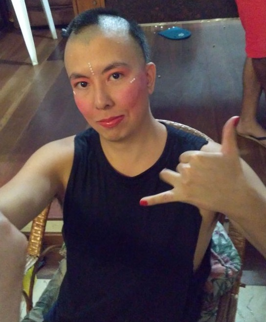
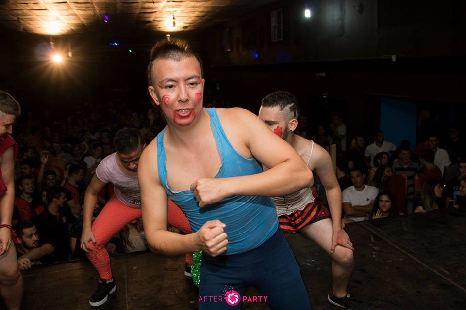

Época de Bixo - Miss Bixo

Uma das coisas que eu absolutamente não sei fazer é dançar. Porém, como era bixo e não tinha opção, o jeito era se molhar. Lembro que na época ensaiamos todos os dias, uma semana antes do evento, na base das pingas para soltar o corpo. Já no dia do evento, havia um open-bar liberado a todos os incritos do Miss Bixo. A ideia era fazer todos os bixos "capotarem o corsa" antes de subirem ao palco, para deixar o evento mais dinâmico e engraçado.
Durante nossa vez, já todos muito "tortos", subimos ao palco enquanto tentávamos lembrar de toda a coreografia. Apesar de haver muita gente nos observando, o etanol fez sua parte e no final acabamos nem ligando pra isso, kkkk. O resultado acabou este do vídeo, mas o importante mesmo é passar VERGONHA, kkkkk:
← Voltar ao portfolio